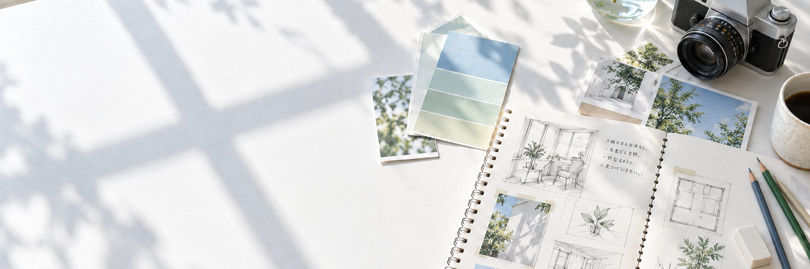
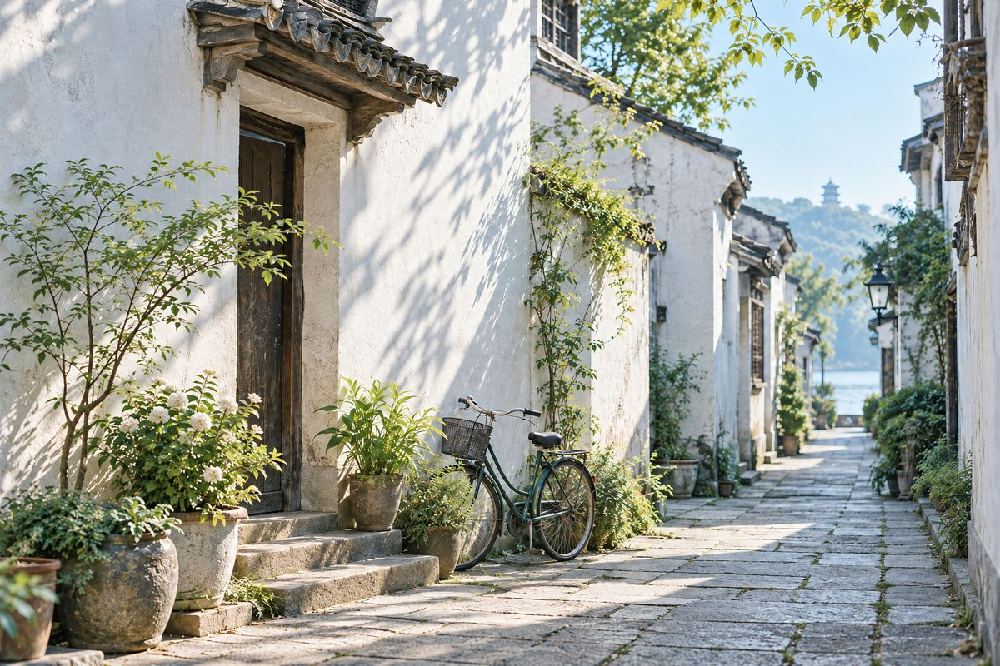
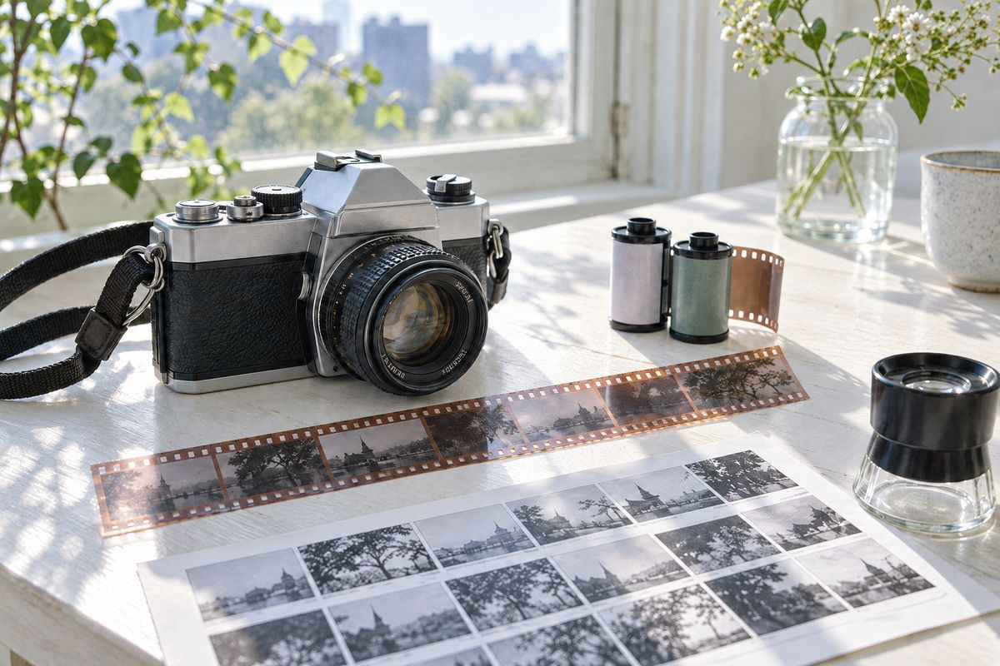

毕业设计 · 2026—2027 · 进行中
《运河慢行》
为运河步道设计的导视系统。从步行者的节奏出发，把距离换算成步行分钟数，用桥名做路标。目前完成了调研和标识原型。

我是林玥玥，在杭州读视觉传达设计，今年大四。喜欢把复杂的事情设计得简单，也喜欢用胶片记录街道。
为运河步道设计的导视系统。从步行者的节奏出发，把距离换算成步行分钟数，用桥名做路标。目前完成了调研和标识原型。

一年里在小巷入口拍下的 36 张照片，全用 35mm 胶片拍摄。同一个巷口早晚、晴雨各拍一次，看光线怎样改变一条巷子。
给一家社区独立书店做 Logo、配色和店内导视。Logo 取自翻开的书页，主色是纸张的米白和书脊的墨绿。

用胶片记录街角的光影，等冲洗的那几天最有意思。
周末沿着运河一路走，把杭州的小巷子走熟。